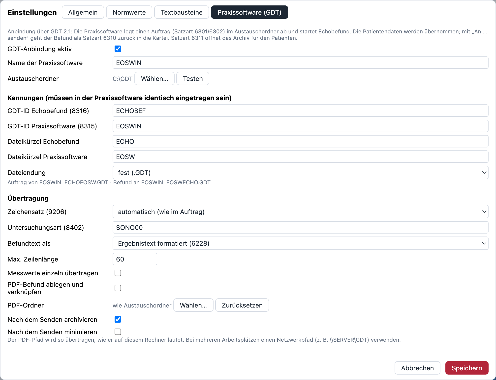
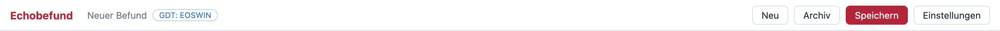
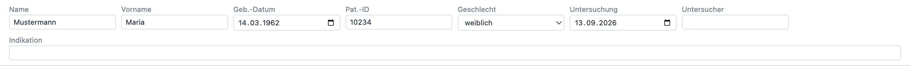
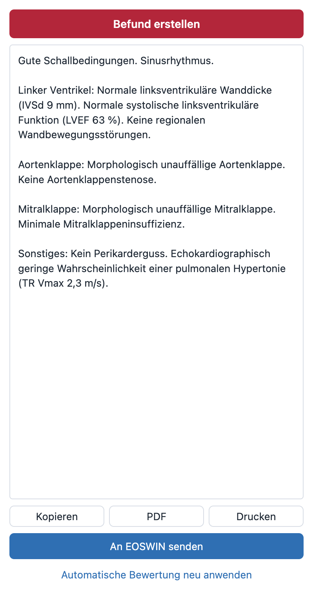
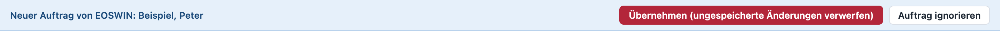

Schritt-für-Schritt-Anleitung für die Praxis. Sie brauchen keine Computer-Vorkenntnisse – nehmen Sie sich etwa 30 bis 45 Minuten Zeit und arbeiten Sie die Teile der Reihe nach durch.
EOSWIN und Echobefund „unterhalten“ sich über einen gemeinsamen Ordner auf dem Computer – ähnlich wie zwei Kollegen, die sich Zettel in ein gemeinsames Fach legen. Dieses Verfahren heißt GDT und wird seit vielen Jahren für EKG-, Lungenfunktions- und Ultraschallgeräte genutzt.
Danach holt EOSWIN den fertigen Befund aus demselben Ordner ab und trägt ihn in die Kartei ein. Damit das klappt, müssen beide Programme dieselben Einstellungen kennen: denselben Ordner und dieselben Dateinamen. Genau darum geht es in dieser Anleitung.
Bitte legen Sie sich vorher Folgendes bereit:
Mehrere Arbeitsplätze?
Wenn Echobefund an mehreren Computern genutzt werden soll, kann der Austauschordner auf dem Praxis-Server liegen. Richten Sie in dem Fall zuerst einen Arbeitsplatz komplett nach dieser Anleitung ein und bitten Sie dann Ihren IT-Betreuer, einen gemeinsamen Netzwerkordner für die übrigen Plätze festzulegen.
Damit alle Plätze dieselben Normwerte, Textbausteine und Vorlagen verwenden: in Echobefund unter Einstellungen → Mehrplatz & Updates an jedem Platz denselben Profil-Ordner auf dem Server wählen.
Echobefund muss nicht installiert werden. Es ist eine einzelne Datei, die Sie an einen festen Platz legen.
Echobefund ein und drücken Sie Enter.Keine Berechtigung für C:\?
Manche Praxis-PCs erlauben keine neuen Ordner direkt auf C:. Legen Sie den Ordner dann in Dokumente an und notieren Sie sich den genauen Ort auf dem Werte-Zettel.
Echobefund-windows-portable.exe wird heruntergeladen (ca. 100 MB, das kann ein paar Minuten dauern).C:\Echobefund aus Schritt 1.1, klicken Sie mit der rechten Maustaste in die freie Fläche und wählen Sie Einfügen.Echobefund-windows-portable.exe.Tipp: Verknüpfung auf den Desktop
Rechtsklick auf die Datei → Weitere Optionen anzeigen (nur Windows 11) → Senden an → Desktop (Verknüpfung erstellen). So finden Sie Echobefund auch ohne EOSWIN schnell.
Das ist das „gemeinsame Fach“, in das beide Programme ihre Dateien legen.
GDT – dann Enter. Der vollständige Ort heißt jetzt C:\GDT.Gibt es schon einen GDT-Ordner?
Wenn in der Praxis bereits ein EKG oder ein anderes Gerät über GDT an EOSWIN angebunden ist, gibt es oft schon so einen Ordner. Sie können ihn mitbenutzen – die Dateinamen von Echobefund sind eindeutig und kommen anderen Geräten nicht in die Quere. Tragen Sie dann einfach diesen Ordner überall statt C:\GDT ein.
EOSWIN – so lassen.GDT und dann auf Ordner auswählen.
Nach dem Speichern sehen Sie oben neben dem Programmnamen eine farbige Markierung – eine kleine Ampel für die Verbindung. Sie wird laufend aktualisiert:
| Anzeige | Bedeutung | Was tun? |
|---|---|---|
| GDT: EOSWIN | Alles in Ordnung: Der Austauschordner ist erreichbar, kein Befund wartet. | Nichts. |
| Befund wartet auf Abholung | Ein gesendeter Befund liegt seit über 2 Minuten im Ordner, EOSWIN hat ihn noch nicht übernommen. | Siehe Problemlösung. |
| GDT-Ordner nicht erreichbar | Der Austauschordner fehlt – z. B. Server aus, Netzwerk getrennt. Aufträge aus EOSWIN kommen nicht an. | Siehe Problemlösung. |
Wenn Sie mit der Maus über die Markierung fahren, erscheint eine kurze Erklärung. Ein Klick darauf öffnet die passende Stelle dieser Anleitung.

Bitte zuerst lesen
Die Menüs von EOSWIN sind nicht öffentlich dokumentiert, und je nach EOSWIN-Version und Lizenz sehen sie unterschiedlich aus. Wir beschreiben deshalb welche Werte EOSWIN braucht – aber nicht, in welchem Menü genau sie stehen. Sie haben zwei Möglichkeiten:
Weg A (empfohlen): Den MCW-Support bitten, das Gerät einzurichten – mit der fertigen E-Mail unten. Das dauert meist nur wenige Minuten per Fernwartung.
Weg B: Selbst einrichten, falls Sie die Geräte-Einstellungen von EOSWIN schon kennen.
Diese Werte müssen in EOSWIN eingetragen werden. Die Spalte „So heißt das Feld oft“ nennt Bezeichnungen, die in Praxisprogrammen üblich sind – in EOSWIN kann es leicht anders heißen. Die rechte Spalte ist zum Abhaken beim Einrichten gedacht.
| Was | So heißt das Feld oft | Wert | ✓ |
|---|---|---|---|
| Name des Geräts | Gerätebezeichnung, Gerätename | Echokardiographie | |
| Art der Anbindung | Schnittstelle, Protokoll, Typ | GDT 2.1 (Datei) | |
| Gemeinsamer Ordner | Austauschverzeichnis, GDT-Verzeichnis, Pfad | C:\GDT | |
| Datei von EOSWIN an Echobefund | Exportdatei, Ausgabedatei, Übergabedatei | ECHOEOSW.GDT | |
| Datei von Echobefund an EOSWIN | Importdatei, Eingangsdatei, Rückgabedatei | EOSWECHO.GDT | |
| Programm, das gestartet wird | Programmaufruf, Programmpfad, Startdatei | C:\Echobefund\Echobefund-windows-portable.exe | |
| Kennung von Echobefund | GDT-ID Empfänger, Geräte-ID (Feld 8315/8316) | ECHOBEF | |
| Kennung von EOSWIN | GDT-ID Sender, eigene GDT-ID | EOSWIN | |
| Auftragsart | Satzart (Feld 8000) | 6302 | |
| Untersuchungsart | Gerätekennfeld, Test (Feld 8402) | SONO00 | |
| Größe & Gewicht mitschicken | Größe/Gewicht übertragen (3622/3623) | Ja | |
| Zeichensatz | Zeichensatz, Codepage (DOS / Windows) | egal – Echobefund passt sich an | |
| Befund übernehmen als | Importart, Übernahme als Text/Karteieintrag | Text in die Kartei | |
| Auf Programmende warten | Warten bis Programm beendet | Nein |
Anderer Ordner als C:\GDT?
Wenn Sie in Teil 1 oder 2 einen anderen Ort gewählt haben, ersetzen Sie C:\GDT bzw. C:\Echobefund auf dem Zettel durch Ihren tatsächlichen Ort. Tipp: Im Explorer oben in die Adressleiste klicken – dann wird der genaue Pfad angezeigt und kann kopiert werden.
Vorsicht bei vorhandenen Geräten
Ändern Sie keine Einträge bereits angebundener Geräte. Wenn Sie unsicher sind, nehmen Sie lieber Weg A.
Testen Sie die Verbindung immer zuerst mit einem Testpatienten, niemals mit einer echten Kartei.

Geschafft, wenn …
… die Daten des Testpatienten in Echobefund stehen. Falls nicht: „Der Patient erscheint nicht“.

Geschafft, wenn …
… der Befundtext in der Kartei des Testpatienten steht und die Umlaute (ä, ö, ü, ß) richtig aussehen. Glückwunsch – die Verbindung funktioniert! Den Testeintrag können Sie in EOSWIN wie gewohnt wieder entfernen.
Ein Blick auf die Ampel genügt
Grün oben neben „Echobefund“ heißt: Verbindung in Ordnung. Gelb oder rot: mit der Maus darüberfahren oder draufklicken – dann sehen Sie, was los ist.
Wenn Sie in Echobefund gerade etwas eingegeben, aber noch nicht gesendet oder gespeichert haben, und in EOSWIN schon den nächsten Patienten aufrufen, überschreibt Echobefund Ihre Eingaben nicht einfach. Stattdessen erscheint oben dieser Balken:

Klicken Sie in Echobefund oben auf Archiv und suchen Sie nach Name oder Patientennummer. Doppelklick öffnet den Befund. Falls EOSWIN die Funktion „Untersuchung anzeigen“ bietet, öffnet Echobefund das Archiv automatisch gefiltert auf den Patienten.
Klicken Sie auf die Frage, die zu Ihrem Problem passt.
C:\GDT. Liegt dort eine Datei, deren Name nicht ECHOEOSW.GDT ist (z. B. ECHOEDV1.GDT), verwendet EOSWIN andere Kürzel. Dann in Echobefund die Felder Dateikürzel Echobefund (die ersten 4 Buchstaben) und Dateikürzel Praxissoftware (die nächsten 4 Buchstaben) entsprechend ändern und speichern.Echobefund überschreibt zur Sicherheit nie einen Befund, den EOSWIN noch nicht eingelesen hat. Öffnen Sie in EOSWIN die Kartei bzw. lösen Sie den Import aus, damit EOSWIN die Datei EOSWECHO.GDT abholt – danach erneut senden.
Bleibt die Meldung dauerhaft, holt EOSWIN die Datei nicht ab. Meist stimmt dann der Name der Importdatei in EOSWIN nicht (muss EOSWECHO.GDT sein) oder der Ordner ist ein anderer.
In Echobefund unter Einstellungen → Praxissoftware (GDT) das Feld Zeichensatz ändern: zuerst ANSI CP1252 (Windows) probieren, wenn das nicht hilft IBM CP437 (GDT-Standard). Speichern und einen neuen Testbefund senden.
In Echobefund unter Befundtext als von Ergebnistext formatiert (6228) auf Befund (6220) umstellen (oder umgekehrt) und erneut testen. Wenn Zeilen zu kurz umbrechen, kann die Max. Zeilenlänge erhöht werden, z. B. auf 80 – nur ändern, wenn EOSWIN das problemlos anzeigt.
Liegt der Ordner auf dem Praxis-Server (z. B. \\SERVER\GDT): Ist der Server eingeschaltet? Funktioniert EOSWIN an diesem Computer? Öffnen Sie den Ordner testweise im Explorer. Sobald er wieder erreichbar ist, wird die Markierung nach wenigen Sekunden von selbst grün.
Der Ordner existiert nicht oder Windows erlaubt dort kein Schreiben. Legen Sie den Ordner wie in Teil 2 beschrieben an und wählen Sie ihn erneut über Wählen… aus. Bei einem Netzwerkordner: Ist der Server erreichbar? Sonst den IT-Betreuer fragen.
Dann ist in EOSWIN „auf Programmende warten“ eingeschaltet. Entweder diese Option in EOSWIN ausschalten – oder Echobefund nach dem Senden einfach schließen. Alternativ können Sie in Echobefund Nach dem Senden minimieren aktivieren.
Echobefund ist nicht mit einem gekauften Microsoft-Zertifikat versehen; Windows SmartScreen und manche Virenscanner reagieren darauf vorsichtig. Bei SmartScreen: Weitere Informationen → Trotzdem ausführen. Blockiert ein Virenscanner die Datei, muss Ihr IT-Betreuer eine Ausnahme für C:\Echobefund einrichten.
Gibt es eine neue Version, erscheint in Echobefund oben ein grüner Hinweis mit dem Knopf Download-Seite öffnen.
C:\Echobefund durch die neue ersetzen – der Dateiname muss gleich bleiben, damit EOSWIN das Programm weiterhin findet.Einstellungen, Normwerte, Textbausteine und Archiv bleiben dabei erhalten.
Einstellungen und Archiv liegen im Benutzerordner unter %APPDATA%\Echobefund. Tippen Sie diesen Text in die Adressleiste des Explorers und drücken Sie Enter, um den Ordner zu öffnen. Bitten Sie Ihren IT-Betreuer, diesen Ordner in die Datensicherung der Praxis aufzunehmen. Unter Einstellungen → Allgemein können Sie das Archiv auch in einen anderen Ordner (z. B. auf dem Server) legen.
| GDT | „Gerätedaten-Transfer“ – ein alter, weit verbreiteter Standard, mit dem Praxisprogramme und medizinische Geräte über Dateien Daten austauschen. |
|---|---|
| Austauschordner | Der gemeinsame Ordner (z. B. C:\GDT), in den beide Programme ihre Dateien legen. |
| Auftrag | Die Datei, mit der EOSWIN den Patienten an Echobefund schickt (ECHOEOSW.GDT). Echobefund liest sie ein und löscht sie danach. |
| Rückgabe / Befunddatei | Die Datei, mit der Echobefund den Befund an EOSWIN schickt (EOSWECHO.GDT). EOSWIN liest sie ein und löscht sie danach. |
| GDT-ID / Kürzel | Kurze Namen, an denen die Programme erkennen, von wem eine Datei kommt und für wen sie bestimmt ist. |
| Satzart | Eine Nummer, die sagt, was eine Datei enthält – z. B. 6302 „neue Untersuchung“, 6310 „Ergebnis einer Untersuchung“. |
| Zeichensatz | Legt fest, wie Buchstaben wie ä, ö, ü gespeichert werden. Stimmt er nicht, sehen Umlaute falsch aus. |
Wichtiger Hinweis
Echobefund ist kein Medizinprodukt. Jeder erzeugte Befund muss vor dem Senden ärztlich geprüft werden. Die Screenshots in dieser Anleitung zeigen erfundene Beispieldaten.